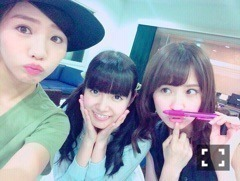

| 2015/07 17 Fri | ひめたん-0o0-その557 |
今日はbayfm「金つぶ」に
ゲスト出演しました(´,,•ω•,,｀)
美彩先輩パーソナリティー完璧だった！
カフを上げたり下げたりかっこよかった♡
今回は小島さんがお休みということで
乃木坂SPをお届けしましたが
いつか小島さんとも共演できたらいいなぁ
わちゃわちゃした放送でした
普段の金つぶとは違う感じになったけれど
大丈夫だったかしら。
質問ノックということで
たくさんの質問にお答えしました～♪
おたよりたくさんありがとう( ˆωˆ )
なんかすんごい楽しくなっちゃって
テンション高かった～(笑)
セリフ対決では相変わらず
美彩先輩に勝てません♡♡
いつか......必ず......！！

そして、らじらーの次回のゲストが
発表になりました！
乃木坂46から斉藤優里ちゃん！夏女！
ゆったんはおに魂やってるから
いや～心強いなあ(´｡•ω•｡`)
楽しい放送になりそうな予感......♪
22時台ではゆったんを迎えて
「熱血ディベート対決」というのをします
熱くディベートしちゃうテーマを待ってます♡
勘違い星人エピソード
らじらー式恋愛参考書
ふつおた、リクエストソングも募集中ですよ～
それぞれの投稿フォームから
よろしくお願いします！
12thアンダー曲
「別れ際、もっと好きになる」
フロントメンバーに選んでいただきました。
前回のシングルで学んだことを活かして
チームの力になれるよう
頑張りたいと思います。
この曲と共に12th期間
みんなでいろんな景色を見て
成長していけたらいいなあ( ˇωˇ )

にゃ～。
(＊´・ω・＊)
コメント(564)
2015/07/17 23:36